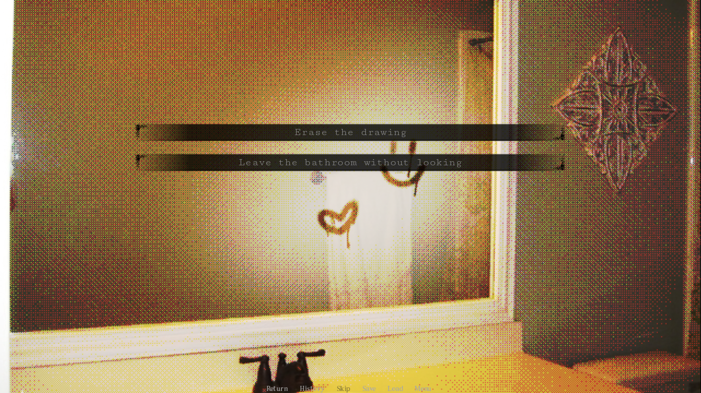
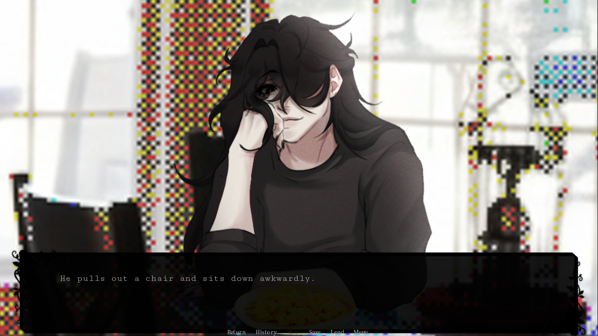
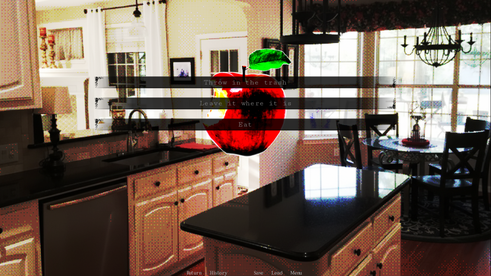
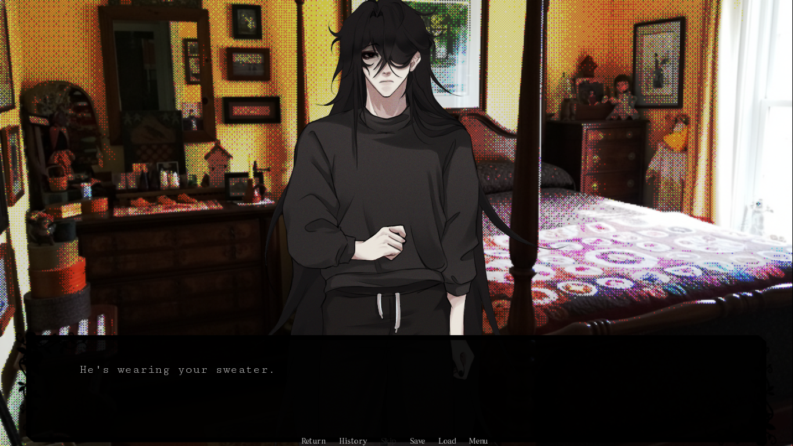

Home Is Where He Is
Home Is Where He Is
Play Home Is Where He Is online
Home Is Where He Is is the kind of visual novel that starts with a simple inheritance and turns it into a surveillance nightmare. Some legacies carry more weight than blood ties. After your grandfather's death, you inherit an isolated, decaying residence shrouded in silence. What should be a routine inventory becomes something else when you realise your every move is being watched. Someone or something knows your habits, your clothes, and your secrets. Someone is already home. This is Home Is Where He Is gameplay: every instinct matters, every choice reshapes what you see next.
This fan-developed Home Is Where He Is game page keeps the browser build playable online because most players searching for a Home Is Where He Is walkthrough want to play first, then read route notes after. The embedded build above loads the latest version directly. Press Play now or click anywhere on the cover to start playing online free straight in your browser, no download needed. Use the full screen button when the hallways start to feel longer than they should.

What the game feels like
Home Is Where He Is sits between psychological horror and yandere visual novel. The romance tag comes with a warning label. It is not about picking the kindest reply or filling an affection meter. The tension comes from reading a scene twice: once for what the characters say, and once for what the house is trying to tell you. Mould is the quiet stranger at the centre. He watches you, he studies you, and he seems to have decided something about you before you even introduced yourself.
The main character is intentionally flexible. You can name them, choose pronouns, and move through the early days without feeling locked into a rigid identity. That matters because the game uses the player character as a pressure point. It tracks Affinity and Fear through your choices where you look, what you touch, who you trust. A kind reply can invite attention. A cold answer can make a scene worse. Silence can be a choice too.
There is a handmade roughness to the art that works in its favour. Rooms are warm in one scene and cavernous in the next. Mould's expressions shift between unsettling and almost tender. The atmosphere moves between the comfort of a shared kitchen at midnight and the wrongness of finding a door that was locked earlier now standing open.
First-run advice
For a first run, treat this page as your Home Is Where He Is walkthrough. Do not rush the opening. Read the small pauses, the way Mould reacts before the obvious choice prompt, and the places where the game lets you customise the main character. The demo can be finished casually, but it is better when you treat it like a route notebook. A line that sounds throwaway early on may explain why a later scene feels so charged.
The current Home Is Where He Is build plays like a focused demo with Prologue and Day 1. It is not yet the Home Is Where He Is full game, but the content is dense enough to feel complete. Expect a main character whose name can be changed, gender-neutral setup with pronoun choices, a yandere love interest named Mould, interactive scenarios and dynamic choices, and four types of endings. A single run takes about 28 minutes, but the branching paths make it worth replaying. Think of it as a tone test, a cast introduction, and a route sampler with enough variation to reward a second look.
Mould is usually the first reason players talk about the game. He has the immediate hook: the quiet presence, the way he moves through rooms without sound, the sense that he studies you more than you study him. He is not just a scary silhouette on a menu screen; he changes how the house feels.
How to use the browser player
The controls are familiar if you have played Ren'Py visual novels before: click, click, or press through dialogue. Watch for interactive objects in the rooms, choice prompts, and small changes in the scene. The game does not highlight everything worth noticing. For the best experience, play on a desktop or laptop in full screen.
If the embedded window is blank when it first loads, wait a moment for the game files to initialise. Ren'Py browser builds need to transfer data before they launch, and some browsers block storage until you interact with the frame. If it stays blank, refresh the page once. Visual novel saves usually live in browser storage, so private browsing or aggressive cleanup can erase them without warning.
If you prefer to play offline, the Home Is Where He Is download free option is available on Itch.io for Windows, macOS, Linux, and Android. The developer, echobat, offers it at name-your-own-price.
Why fans keep coming back
The hook of Home Is Where He Is is not complicated, and that is the point. A stranger in an inherited house is a small image, but the game squeezes a lot out of it. It turns attention into a threat and a reward. The title sounds like something a person would whisper about where they live not a formal synopsis and the demo keeps that feeling alive. Most Home Is Where He Is reviews point to this atmospheric tension as the reason players keep coming back.
The best scenes are built on uncomfortable contrast. A moment in the kitchen can feel almost domestic in one beat and deeply wrong in the next. A romantic beat can feel flattering until the framing reminds you how little control the main character may have. The game's branching paths mean that different choices lead to noticeably different scenes and that gives returning players a reason to try a different instinct on a second run.
Also note which names the game forbids: Mould and Asher cannot be used for your character, and that restriction is a clue about where the story is heading.
Content notes
This story is for mature players (18+). It can involve psychological horror, psychological manipulation, non-consensual themes, physical and emotional abuse, death and grief, and private prison. The page does not soften that into a generic haunted house story. Take breaks, use volume controls, and stop if a scene is doing more than you wanted from a game.
Fan-page note
This site is a fan-developed browser page for Home Is Where He Is. It exists to make the game easier to launch, easier to revisit, and easier to read about without digging through scattered forum posts. The game title, characters, media, videos, and build belong to their respective owner, echobat. This page is not an official publisher site; it is a play-friendly fan page with a built-in browser player, screenshots, and links to the official Itch.io download.
Screenshots

Videos
FAQ
Can I play Home Is Where He Is online?
Yes. Press Play now or click anywhere on the game cover to launch the browser build without installing anything.
How many endings does Home Is Where He Is have?
Four types, tracked through Affinity and Fear scores.
Is Home Is Where He Is a full game or just a demo?
The current build includes Prologue and Day 1, about 28 minutes. Future updates will add more content.
Does Home Is Where He Is work on mobile?
The page is responsive but Ren'Py browser builds behave differently on phones. Landscape orientation recommended.
Is Home Is Where He Is available in English?
Yes. English and Portuguese (Brazil) options are available. Spanish has been announced.
Why is the screen black when I play Home Is Where He Is?
Give the iframe a moment to load, make sure browser storage is allowed, and refresh once if needed.
Is this site official for Home Is Where He Is?
This is a fan-developed browser page. The game and assets belong to echobat.
Is Home Is Where He Is suitable for everyone?
No. It is meant for mature players (18+).